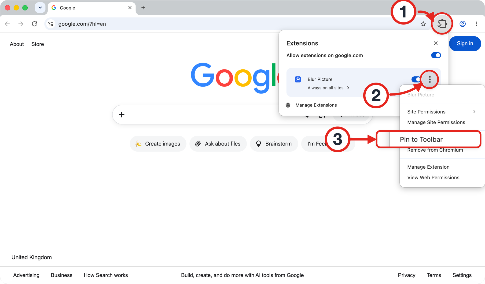
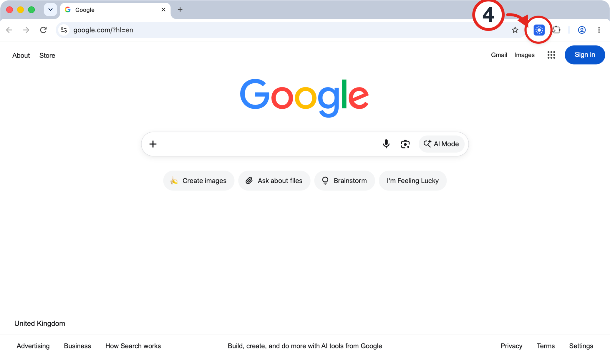
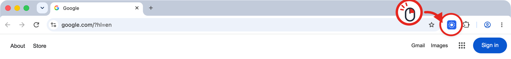
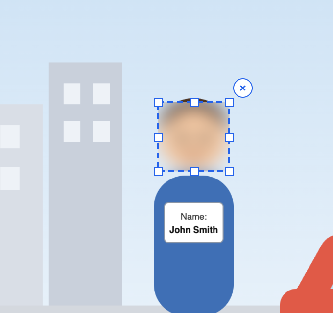
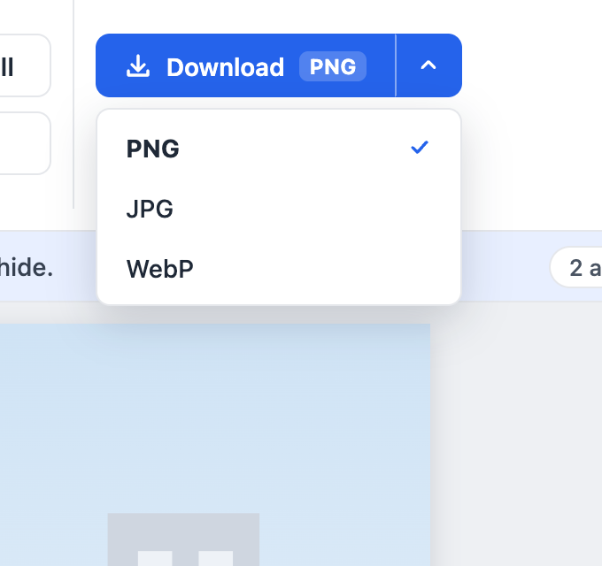

Blur Picture Installed
Click the puzzle piece icon (1) in the top-right corner of your browser. Then click the three dots (2) next to Blur Picture and choose Pin to Toolbar (3):

Open the extension (4) on any page to start using Blur Picture:

Already pinned? Learn how to use Blur Picture.
Blur Picture is ready
It’s already in your toolbar. Here’s how to get the most out of it.

-
1Upload a picture
Click Upload image and choose a picture from your computer.
-
2Hide faces and text
Drag over the part you want to hide — a face, name, or license plate. It will be blurred right away.

-
3Download results
Click Download. To change the format, click the arrow next to it and choose PNG, JPG, or WebP.

Don’t see the icon in your toolbar? Learn how to pin it.